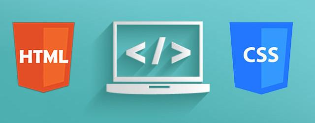

HTML y CSS Avanzado
Conceptos Fundamentales
HTML (HyperText Markup Language) es el lenguaje estándar para crear páginas web. Define la estructura y el contenido utilizando etiquetas semánticas.
CSS (Cascading Style Sheets) se utiliza para describir la presentación visual de documentos HTML. Permite aplicar estilos como colores, fuentes y diseños complejos.
Flexbox y Grid son modelos de diseño en CSS que permiten crear layouts complejos y responsivos con facilidad. Las Media queries permiten aplicar estilos específicos según el dispositivo.
Herramienta Emmet
Emmet es un plugin que permite escribir código HTML y CSS de manera más rápida y eficiente usando abreviaturas que se expanden en bloques de código completos.
Ejemplo de Emmet:
nav.nav>ul>li*4>a[href=page$@-.html]{Link$@-}Se expande a:
<nav class="nav">
<ul>
<li><a href="page1.html">Link1</a></li>
<li><a href="page2.html">Link2</a></li>
<li><a href="page3.html">Link3</a></li>
<li><a href="page4.html">Link4</a></li>
</ul>
</nav>Ejemplo de Diseño Responsive
body {
display: flex;
justify-content: center;
align-items: center;
height: 100vh;
margin: 0;
}
@media (max-width: 600px) {
body {
flex-direction: column;
}
}Tecnologías Dominadas
- HTML5: Elementos semánticos, formularios avanzados
- CSS3: Flexbox, Grid, animaciones
- Emmet: Escritura rápida de código
- Responsive Design: Media queries y diseño adaptativo
Reflexión Personal
Comprendí cómo separar contenido y presentación para lograr páginas limpias y adaptables. Aprendí la importancia de un diseño responsive y cómo implementarlo efectivamente.
El dominio de Emmet me permitió acelerar significativamente mi flujo de trabajo, mientras que Flexbox y Grid me dieron las herramientas para crear layouts profesionales.